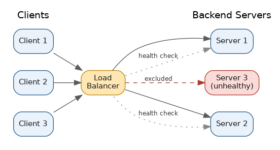
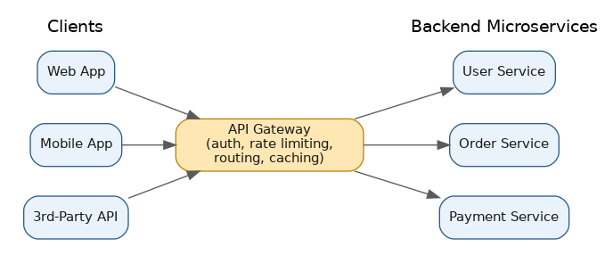

Load Balancing & API Gateway
Table of Contents
- Overview
- Introduction to Load Balancing
- Load Balancing Algorithms
- Uses of Load Balancing
- Load Balancer Types
- Stateless vs. Stateful Load Balancing
- High Availability and Fault Tolerance
- Scalability and Performance
- Challenges of Load Balancers
- Introduction to API Gateway
- Usage of API Gateway
- Advantages and Disadvantages of Using API Gateway
- Common Interview Questions
- Key Takeaways
Overview
Before a request ever reaches a piece of business logic in a microservices system, it typically passes through two pieces of traffic-management infrastructure: a load balancer, which decides which of many identical backend instances should handle the request, and an API gateway, which decides which service should even be involved and takes care of cross-cutting concerns like authentication and rate limiting along the way. The two are easy to confuse because they often sit next to each other in an architecture diagram and are sometimes even bundled into the same product, but they solve different problems — one is about distributing load across a pool of interchangeable servers, the other is about presenting a single, well-managed front door to a much larger and more varied set of backend services. This page walks through both in depth: how load balancers pick a server, the different ways they can be deployed, the reliability and performance they buy you, and then how an API gateway builds on top of those same ideas to manage an entire API surface.
Introduction to Load Balancing
A load balancer is the component that sits in front of a pool of backend servers and decides, for every incoming request, which one of those servers should handle it. Without one, every client would need to connect to a specific server directly, and that server would eventually buckle under load as traffic grew. By funneling all traffic through the load balancer first, no single machine has to absorb everything, and the system as a whole keeps responding smoothly even as demand increases or individual servers fail. In networking terms, a load balancer is usually a form of reverse proxy — it accepts connections on behalf of the servers behind it and relays them along, so clients never talk to the backend machines directly.
Load balancers continuously run health checks — small, periodic probes such as hitting a /health endpoint — to make sure each backend server is actually alive and behaving correctly. The moment a server fails a check, the load balancer quietly stops sending it traffic until it recovers, which is as much a reliability mechanism as it is a traffic-distribution one. Very few teams build a load balancer from scratch today: common choices include managed cloud offerings like AWS Elastic Load Balancing (with its Application, Network, and Gateway Load Balancer variants), Google Cloud Load Balancing, and Azure Load Balancer, plus self-hosted software options like NGINX, HAProxy, and Envoy, and CDN-integrated global load balancing from providers like Cloudflare. Whatever the implementation, the job is the same: take one stream of inbound traffic and safely fan it out across many servers.
This page focuses on load balancing as it applies to everyday microservices traffic management; the System Design — Building Units section has its own dedicated Load Balancing page that covers the topic from a building-block/infrastructure-catalog angle, which is worth reading as a complementary reference.

Load Balancing Algorithms
The "algorithm" is simply the rule a load balancer uses to decide which server gets the next request. Some algorithms are cheap and simple, others take more real-time information into account to make smarter placement decisions. The most commonly used ones are round robin (cycling through servers in a fixed rotating order — great when servers and requests are roughly uniform), weighted round robin (the same rotation, but biased toward more capable servers), least connections (send the request to whichever server currently has the fewest active connections — better than round robin once request cost varies), weighted least connections (least connections adjusted for each server's relative capacity), IP hash (deterministically hashing the client's IP so the same client always lands on the same server, a simple way to get session affinity), least response time (route to whichever server is currently answering fastest), and consistent hashing (a more advanced hashing scheme, heavily used inside distributed caches and sharded databases such as DynamoDB and Cassandra, designed so that adding or removing a server only remaps a small slice of traffic instead of reshuffling everything).
| Algorithm | How it decides | Best suited for |
|---|---|---|
| Round robin | Cycles through servers in a fixed order | Uniform servers, similarly-costed requests |
| Weighted round robin | Round robin biased by a per-server capacity weight | Pools with mixed-capacity servers |
| Least connections | Sends the request to the server with the fewest active connections | Requests with variable processing time |
| Weighted least connections | Least connections, adjusted by server capacity | Mixed-capacity pools with variable-cost requests |
| IP hash | Hashes the client IP to a consistent server | Simple session affinity |
| Least response time | Routes to the currently fastest-responding server | Latency-sensitive workloads |
| Consistent hashing | Hash ring that remaps only a small slice of traffic on change | Distributed caches, sharded databases |
Picking the right one comes down to the workload: round robin is fine for quick, uniform, stateless requests; least connections shines once request costs vary a lot; and IP hash or consistent hashing matter whenever a client needs to consistently land on the same backend for caching or session reasons.
Uses of Load Balancing
Load balancing does far more than just spread traffic evenly. Its most basic job is traffic distribution, preventing any one server from becoming a bottleneck, but it also delivers high availability by automatically routing around unhealthy servers, and it's what makes horizontal scalability practical in the first place — servers can be added or removed behind the load balancer without clients ever noticing, which pairs naturally with cloud auto-scaling groups. Load balancers also commonly perform SSL/TLS termination, taking on the CPU-intensive work of encrypting and decrypting HTTPS traffic so backend servers can focus purely on application logic, and they underpin zero-downtime deployments such as blue-green releases and canary rollouts, which rely on the load balancer to gradually shift traffic from an old version of a service to a new one. At a larger scale, DNS-based global traffic management — offered by services like AWS Route 53, Google Cloud DNS, and Cloudflare — sends users to the nearest or healthiest data center or region, which matters enormously for globally distributed products.
The real-world stakes are easy to picture: e-commerce sites lean on load balancing to survive Black Friday-scale spikes, streaming platforms like Netflix balance load across thousands of servers worldwide, and payment companies like PayPal distribute transaction traffic across multiple data centers so payments keep flowing even if one location has a problem.
Load Balancer Types
Load balancers can be categorized along a few different dimensions — the network layer they operate at, how they're deployed, and their scope. Layer 4 (transport layer) load balancers work using only basic connection details (IP addresses and TCP/UDP ports) without inspecting the actual content of the traffic; they're extremely fast, which makes them well suited to high-throughput, low-latency needs like video streaming, gaming, or DNS traffic — AWS's Network Load Balancer is a well-known example. Layer 7 (application layer) load balancers, by contrast, understand the actual request — HTTP headers, URLs, cookies, even the body — and can make far smarter routing decisions, such as sending /api/users to one service and /api/orders to another; this requires more processing (including decrypting HTTPS) but unlocks much richer functionality, and is where AWS's Application Load Balancer, NGINX, and HAProxy live.
By deployment model, hardware load balancers are dedicated physical appliances (F5 BIG-IP, Citrix/NetScaler ADC) built for extremely high performance using specialized chips, but they're expensive and inflexible, while software load balancers — NGINX, HAProxy, Envoy — run as ordinary programs on regular servers, and are cheaper, more flexible, and easier to automate, which is why most cloud-native systems favor them. At a broader scope, DNS / Global Server Load Balancing (GSLB) works at the domain-resolution level, handing back different IP addresses based on a user's location or a region's health, spreading traffic across entire data centers rather than just servers in one place. Finally, in containerized environments, Kubernetes-native load balancing happens through Kubernetes Services, Ingress controllers, and the newer Kubernetes Gateway API (with implementations like Envoy Gateway, Kong, and Istio), routing traffic to the right pods inside a cluster.
Stateless vs. Stateful Load Balancing
A stateless load balancer treats every request independently — it has no memory of previous requests from the same client and simply applies its algorithm fresh each time. This is the simplest and most scalable approach: any server can handle any request, and if one goes down, no client-specific data is lost with it. A stateful load balancer, on the other hand, tracks client sessions and tries to keep sending a given client's requests to the same backend server — commonly called "sticky sessions" or "session affinity." This matters when an application stores session state (a shopping cart, a login) directly in a server's local memory rather than in a shared external store; AWS's ALB, NGINX, and HAProxy all support configuring sticky sessions, typically via a cookie or the client's IP.
The modern best practice, especially in cloud-native and microservices architectures, is to design services to be stateless wherever possible, storing session data in a shared external system like Redis or Memcached instead of on the server itself — that way any server can serve any request, sticky sessions become unnecessary, and the whole system is both easier to scale and more resilient to individual server failures.
| Dimension | Stateless Load Balancing | Stateful Load Balancing |
|---|---|---|
| Session handling | No session tracked by the load balancer | Client pinned to a specific server (sticky sessions) |
| Fault tolerance | High — any server can take over instantly | Lower — losing the pinned server can lose session data |
| Load distribution | Very even | Can become uneven if some users are more active |
| Complexity | Simpler to operate and scale | More complex; needs session replication or affinity rules |
| Typical use case | Modern stateless APIs/microservices | Legacy apps or apps with in-memory session state |
High Availability and Fault Tolerance
Because the load balancer sits directly in the path of every request, it is itself critical infrastructure — if it goes down, everything behind it becomes unreachable even if every backend server is perfectly healthy. For that reason, load balancers are almost never deployed as a single instance. Two common redundancy patterns are active-passive, where one instance handles all traffic while an identical standby waits to take over (often using VRRP or Keepalived to detect failure and shift a shared IP), and active-active, where multiple instances handle traffic simultaneously, improving both fault tolerance and capacity utilization, typically coordinated via DNS or an additional layer of distribution. In practice, most teams don't manage this redundancy by hand — cloud-managed load balancers like AWS's ALB/NLB or Google Cloud's offerings are highly available by default, spreading themselves across multiple physical zones so there's no single point of failure to babysit.
Health checks are the other half of the story: by continuously probing whether each backend server is responsive, the load balancer can reroute traffic away from a failing server within seconds, with no human involved. This tight "detect failure, redirect traffic" loop is exactly what lets a system keep functioning smoothly as individual pieces fail, tying directly back to the broader high-availability and fault-tolerance concepts covered on the System Design Fundamentals page.
Scalability and Performance
Load balancing is one of the main enablers of horizontal scaling — handling more traffic by adding more servers rather than making one server bigger. Because the load balancer abstracts away exactly which server handles a given request, new servers can be added or removed behind it without clients ever needing to know. This pairs naturally with auto-scaling: cloud platforms can automatically launch new instances as traffic rises and register them with the load balancer, then terminate them as traffic falls — auto-scaling controls how many servers exist, while load balancing controls how traffic is spread across them.
Beyond distribution, load balancers directly improve performance in their own right: many can cache frequently requested responses, compress outbound data, reuse existing connections instead of opening new ones for every request (connection pooling/keep-alive), and offload the CPU-heavy work of SSL/TLS encryption from backend servers. All of this reduces the work each backend server does per request, lowering latency and raising total throughput. The combination of load balancing, horizontal scaling, and auto-scaling is exactly what lets modern applications absorb a flash sale or a viral moment without falling over, then scale back down afterward to save on cost.
Challenges of Load Balancers
Load balancers solve major problems, but they bring their own set of trade-offs that system designers have to plan for. There's an inherent single point of failure risk if the load balancer itself isn't made redundant, which is why load balancers typically need to target very high availability themselves (often 99.99%+). SSL/TLS termination simplifies backend servers but means the load balancer now holds sensitive certificates, and if internal traffic stays unencrypted after termination, it could be exposed to interception inside your own network. Session persistence adds real complexity — session data has to stay synchronized or replicated, and pinning users to specific servers can create uneven load, undermining the balancing the load balancer is supposed to provide. The load balancer is also an extra network hop, and any heavy work it performs (SSL decryption, deep inspection, transformation) adds measurable latency to every request. There's real operational complexity and cost in configuring health checks, algorithms, certificates, and redundancy correctly, and hardware load balancers in particular can be expensive to buy and maintain. Finally, failover and thundering-herd effects are a real risk: when a server or an entire load balancer node fails, the sudden redistribution of its traffic onto the remaining servers can itself trigger a cascading overload if capacity wasn't planned with headroom. None of this means "don't use a load balancer" — it means the load balancer itself has to be designed for reliability, not treated as a magic fix.
Introduction to API Gateway
An API gateway is a server that sits at the "front door" of a system, acting as the single entry point for all incoming API requests between clients — web apps, mobile apps, third-party developers — and a collection of backend services. Instead of every client needing to know the exact address and details of every individual service, the client only ever talks to the gateway, which figures out which internal service should actually handle the request and forwards it there. This pattern became especially important as microservices architectures took off in the mid-2010s, when a single product might be built from dozens or hundreds of small, independently deployed services — without a gateway, every client would need to track and call each one directly, which quickly becomes unmanageable.
It's easy to confuse an API gateway with a load balancer, and in practice they're often paired together — a gateway is frequently built on top of, or alongside, load balancing and reverse-proxy technology like NGINX or Envoy. The key difference is intelligence: a load balancer generally just distributes connections across a pool of identical servers, while an API gateway understands the structure of the APIs themselves — routing by URL path, translating protocols (say, an external REST call into an internal gRPC call), enforcing authentication, and even combining responses from multiple backend services into a single reply. Well-known products include Amazon API Gateway (heavily used for serverless architectures fronting AWS Lambda), Kong (open-source and commercial, built on NGINX), Google's Apigee (enterprise API management, often used for monetizing and governing APIs), Azure API Management, and Envoy-based options like Envoy Gateway — now the modern standard for Kubernetes environments via the Kubernetes Gateway API, the newer and more capable replacement for the older Ingress resource.
The Software Architecture Patterns section covers the API Gateway pattern from a pure architecture-pattern perspective, focusing on structural trade-offs rather than the underlying networking concepts — see API Gateway Pattern for that complementary treatment.

Usage of API Gateway
An API gateway typically absorbs a set of "cross-cutting concerns" — jobs that would otherwise have to be duplicated inside every backend service — and handles them once, centrally. That includes routing requests to the right service based on URL path, HTTP method, or headers (e.g., /api/users to the User Service, /api/orders to the Order Service); authentication and authorization, verifying who's making a request before it ever reaches a backend service, using API keys, OAuth 2.0/OpenID Connect, or JWTs; rate limiting and throttling, controlling how many requests a client can make in a given window (via strategies like token bucket or sliding window counters) so backend services are protected and different customer tiers can get different limits; and request/response transformation and protocol translation, such as converting an external HTTP/REST call into an internal gRPC call or reshaping a response before it goes back to the client.
Gateways also commonly provide response caching so repeated calls can be served instantly without hitting backend services again; aggregation, combining calls to multiple backend services into a single response — especially valuable for mobile clients minimizing round trips, sometimes called the "Backend for Frontend" (BFF) pattern; centralized logging, analytics, and monitoring of API usage, errors, and latency; and in some cases resilience features like circuit breaking or request retries to protect the system from cascading failures when a backend service is struggling.
Advantages and Disadvantages of Using API Gateway
The advantages are substantial: a gateway gives clients one consistent, simple entry point, hiding the internal complexity of how services are organized; it centralizes security (authentication, authorization, rate limiting) so individual services don't each have to reimplement it; it makes it easier to scale, monitor, and evolve backend services independently, since clients only interact with the stable gateway interface; it enables performance optimizations like caching and connection reuse that cut latency for end users; and it lets internal architecture change — splitting a service in two, or rewriting one in a different language — without breaking clients, since only the gateway's routing needs updating.
The disadvantages are real too: if not designed carefully, the gateway can become a single point of failure or performance bottleneck, since all traffic must pass through it — typically mitigated by running multiple redundant gateway instances behind a load balancer. It adds an extra network hop, and any heavy work it does (authentication checks, payload transformation) adds latency to every request, something caching and efficient implementation can minimize but never fully eliminate. It also introduces additional operational complexity — another system to configure, secure, monitor, and keep highly available, with its own deployment pipeline and failure modes. In practice, most teams building microservices at meaningful scale find the benefits — centralized security, simpler clients, operational visibility — outweigh these costs, provided the gateway itself is built to be redundant and performant.